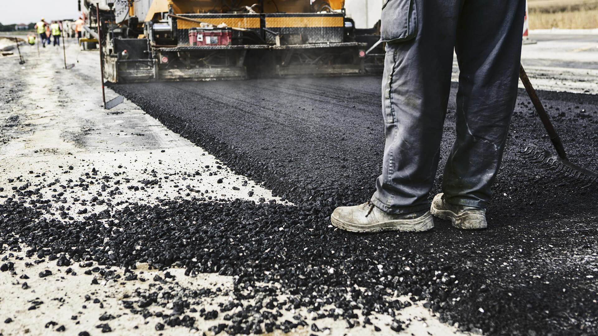

Iranian Bitumen – A Global Infrastructure Essential with Exceptional Value
Iranian bitumen is recognized worldwide as a high‑performance, cost‑effective material that supports the backbone of modern infrastructure. This dense, black, and highly adhesive substance is indispensable in road construction, airport runways, roofing applications, and waterproofing systems, making it a critical component for both public and private development projects. At Iran Bitumen Supply Int, we specialize in manufacturing and exporting premium‑grade Iran bitumen tailored for international buyers. Whether you are a contractor seeking to buy bitumen from Iran in bulk or a procurement specialist searching for a dependable long‑term supplier, our factory‑direct production model ensures consistent quality, reliable delivery, and highly competitive Iran bitumen prices.
Global Leadership in Iran Bitumen Export
Today, Iran bitumen export plays a crucial role in supporting infrastructure growth across developing and developed markets alike. At Iran Bitumen Supply Int, we operate from a modern, ISO‑certified production facility, enabling us to serve as a trusted bitumen exporter to Asia, India, Africa, and international markets worldwide. Our export‑ready bitumen is available in multiple secure packaging options—including steel drums, jumbo bags, and bitutainers—each designed to ensure safe, efficient delivery from our plant to your destination port. Whether you’re sourcing bulk bitumen for road construction, waterproofing, or industrial applications, our streamlined logistics and quality‑controlled packaging guarantee reliability at every stage of shipment.
Innovation and Dependability in Every Iran Bitumen Order
Clients choose Iran Bitumen Supply Int (IBSI) not only for our superior product quality but also for our deep technical expertise and personalized customer support. From standard penetration‑grade bitumen to Polymer Modified Bitumen (PMB) and advanced bitumen emulsions, we deliver solutions engineered for diverse climates, road conditions, and construction requirements. Our experienced team supports international buyers looking to buy bitumen from Iran with complete confidence. We offer flexible and secure payment options—including 100% L.C.—along with dependable logistics to ensure smooth, on‑time delivery. As a responsible and forward‑thinking Iran bitumen dealer, we are committed to sustainability through initiatives such as bitumen recycling and energy‑efficient packaging. This approach strengthens our role in the evolving global bitumen supply chain. Every Iran bitumen price we offer reflects genuine value, backed by consistent quality, transparent service, and long‑term reliability.
Bitumen Grades Explained: Choosing the Right Type for Your Project
Selecting the correct bitumen grade is essential for achieving durability, performance, and cost-efficiency in road construction and industrial applications. Each project environment requires specific technical characteristics.
Rather than using a one-size-fits-all approach, buyers should match the bitumen grade to climate conditions, traffic load, application method, and project lifespan.
Common Bitumen Categories Used in International Projects
- Penetration Grade Bitumen – widely used for road construction and paving works
- Viscosity Grade (VG) Bitumen – designed for performance consistency under temperature variations
- Oxidized / Blown Bitumen – suitable for industrial, waterproofing, and roofing applications
- Modified Bitumen – including PMB, CRMB, and PG grades for high-performance roads
- Cutback Bitumen – MC, SC, and RC grades for spraying and cold application needs
For detailed technical specifications, use cases, and export availability of each grade, visit our dedicated products page:
👉 View all Iranian Bitumen Grades & Export Specifications

Bitumen Packaging Options Explained: Choosing the Right Packing Method
Choosing the right bitumen packaging option is an important part of ensuring product quality, safe transport, and efficient delivery. Different buyers require different packing methods depending on shipment size, destination, handling equipment, and logistical requirements.
Instead of applying one standard packaging method to every order, it is better to match the packaging type to the transport route, unloading conditions, and overall project demand.
Common Bitumen Packaging Options Used in International Trade:
- Steel Drums – a reliable choice for smaller to medium-sized shipments, offering durable protection and easy handling.
- Jumbo Bags – a practical solution for medium-volume orders, helping optimize loading and reduce packaging waste.
- Flexitanks – suitable for liquid bitumen transport inside containers, offering efficient payload use and cleaner discharge.
- Bulk Shipment – the preferred option for large-volume supply contracts and industrial terminals with heating and pumping systems.
For detailed information about each packaging type, its benefits, and export suitability, visit our dedicated packaging options page:
👉 View Bitumen Packaging Options
Bitumen supply is not a price game — it’s a test of consistency, transparency, technical depth, and the long‑term reliability that earns genuine trust in global trade.